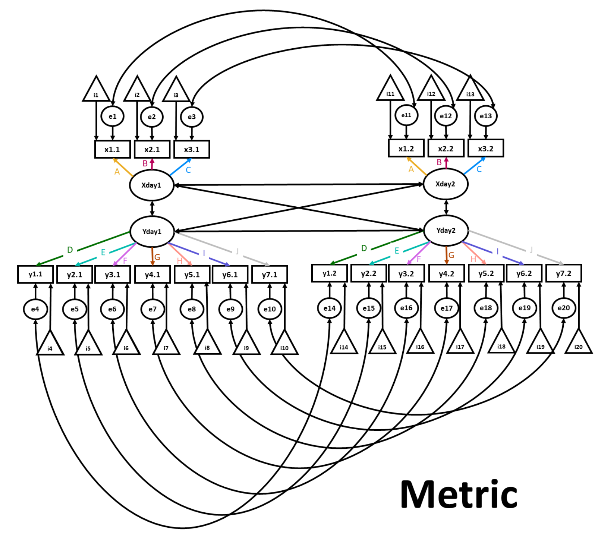

24.7 Invarianza metrica
24.7.1 Definizione del modello
Mostriamo ora come verificare l’invarianza metrica. In questo modello, oltre ai vincoli applicati al nostro modello di invarianza configurale, imponiamo il vincolo dell’eguaglianza delle saturazioni di ciascuna rilevazione (wave). Lo facciamo applicando una singola etichetta a tutte e cinque le iterazioni di ciascun fattore (ad es.,, l’etichetta psp1f* viene applicata a tutte e cinque le iterazioni di psp1). Il test con una “f” aggiunta alle etichette sono a sinistra e i nomi delle variabili sono a destra.

FIGURA 24.2: Invarianza metrica.
metric.v1 <-
"
# PSP factor loadings defined, and constrained across waves
PSP.7 =~ psp1f*psp1.7 + psp2f*psp2.7 + psp3f*psp3.7
PSP.8 =~ psp1f*psp1.8 + psp2f*psp2.8 + psp3f*psp3.8
PSP.9 =~ psp1f*psp1.9 + psp2f*psp2.9 + psp3f*psp3.9
PSP.10 =~ psp1f*psp1.10 + psp2f*psp2.10 + psp3f*psp3.10
PSP.11 =~ psp1f*psp1.11 + psp2f*psp2.11 + psp3f*psp3.11
# PSP variance constrained to 1
PSP.7 ~~ 1*PSP.7
PSP.8 ~~ 1*PSP.8
PSP.9 ~~ 1*PSP.9
PSP.10 ~~ 1*PSP.10
PSP.11 ~~ 1*PSP.11
# SSA factor loadings defined, and constrained across waves
SSA.7 =~ ssa1f*ssa1.7 + ssa2f*ssa2.7 + ssa3f*ssa3.7 +
ssa4f*ssa4.7 + ssa5f*ssa5.7 + ssa6f*ssa6.7 + ssa7f*ssa7.7
SSA.8 =~ ssa1f*ssa1.8 + ssa2f*ssa2.8 + ssa3f*ssa3.8 +
ssa4f*ssa4.8 + ssa5f*ssa5.8 + ssa6f*ssa6.8 + ssa7f*ssa7.8
SSA.9 =~ ssa1f*ssa1.9 + ssa2f*ssa2.9 + ssa3f*ssa3.9 +
ssa4f*ssa4.9 + ssa5f*ssa5.9 + ssa6f*ssa6.9 + ssa7f*ssa7.9
SSA.10 =~ ssa1f*ssa1.10 + ssa2f*ssa2.10 + ssa3f*ssa3.10 +
ssa4f*ssa4.10 + ssa5f*ssa5.10 + ssa6f*ssa6.10 + ssa7f*ssa7.10
SSA.11 =~ ssa1f*ssa1.11 + ssa2f*ssa2.11 + ssa3f*ssa3.11 +
ssa4f*ssa4.11 + ssa5f*ssa5.11 + ssa6f*ssa6.11 + ssa7f*ssa7.11
# SSA variance constrained to 1
SSA.7 ~~ 1*SSA.7
SSA.8 ~~ 1*SSA.8
SSA.9 ~~ 1*SSA.9
SSA.10 ~~ 1*SSA.10
SSA.11 ~~ 1*SSA.11
"
metric.model <- paste(metric.v1, errorstructure, sep = " ", collapse = NULL)24.7.2 Output del modello
metric.fit <- cfa(metric.model,
data = model.test.dat,
estimator = "MLR",
se = "robust",
missing = "ML",
std.lv = TRUE
)
summary(metric.fit,
fit.measures = TRUE,
standardized = TRUE,
ci = TRUE,
rsquare = TRUE
)
#> lavaan 0.6-11 ended normally after 132 iterations
#>
#> Estimator ML
#> Optimization method NLMINB
#> Number of model parameters 295
#> Number of equality constraints 130
#>
#> Number of observations 251
#> Number of missing patterns 27
#>
#> Model Test User Model:
#> Standard Robust
#> Test Statistic 2035.146 1726.131
#> Degrees of freedom 1160 1160
#> P-value (Chi-square) 0.000 0.000
#> Scaling correction factor 1.179
#> Yuan-Bentler correction (Mplus variant)
#>
#> Model Test Baseline Model:
#>
#> Test statistic 15377.626 12165.693
#> Degrees of freedom 1225 1225
#> P-value 0.000 0.000
#> Scaling correction factor 1.264
#>
#> User Model versus Baseline Model:
#>
#> Comparative Fit Index (CFI) 0.938 0.948
#> Tucker-Lewis Index (TLI) 0.935 0.945
#>
#> Robust Comparative Fit Index (CFI) 0.952
#> Robust Tucker-Lewis Index (TLI) 0.949
#>
#> Loglikelihood and Information Criteria:
#>
#> Loglikelihood user model (H0) -12651.834 -12651.834
#> Scaling correction factor 0.874
#> for the MLR correction
#> Loglikelihood unrestricted model (H1) -11634.262 -11634.262
#> Scaling correction factor 1.227
#> for the MLR correction
#>
#> Akaike (AIC) 25633.669 25633.669
#> Bayesian (BIC) 26215.369 26215.369
#> Sample-size adjusted Bayesian (BIC) 25692.299 25692.299
#>
#> Root Mean Square Error of Approximation:
#>
#> RMSEA 0.055 0.044
#> 90 Percent confidence interval - lower 0.051 0.040
#> 90 Percent confidence interval - upper 0.059 0.048
#> P-value RMSEA <= 0.05 0.023 0.994
#>
#> Robust RMSEA 0.048
#> 90 Percent confidence interval - lower 0.043
#> 90 Percent confidence interval - upper 0.053
#>
#> Standardized Root Mean Square Residual:
#>
#> SRMR 0.058 0.058
#>
#> Parameter Estimates:
#>
#> Standard errors Sandwich
#> Information bread Observed
#> Observed information based on Hessian
#>
#> Latent Variables:
#> Estimate Std.Err z-value P(>|z|) ci.lower ci.upper
#> PSP.7 =~
#> psp1.7 (psp1) 1.678 0.102 16.496 0.000 1.479 1.878
#> psp2.7 (psp2) 1.988 0.050 40.142 0.000 1.891 2.085
#> psp3.7 (psp3) 1.868 0.058 32.398 0.000 1.755 1.981
#> PSP.8 =~
#> psp1.8 (psp1) 1.678 0.102 16.496 0.000 1.479 1.878
#> psp2.8 (psp2) 1.988 0.050 40.142 0.000 1.891 2.085
#> psp3.8 (psp3) 1.868 0.058 32.398 0.000 1.755 1.981
#> PSP.9 =~
#> psp1.9 (psp1) 1.678 0.102 16.496 0.000 1.479 1.878
#> psp2.9 (psp2) 1.988 0.050 40.142 0.000 1.891 2.085
#> psp3.9 (psp3) 1.868 0.058 32.398 0.000 1.755 1.981
#> PSP.10 =~
#> psp1.10 (psp1) 1.678 0.102 16.496 0.000 1.479 1.878
#> psp2.10 (psp2) 1.988 0.050 40.142 0.000 1.891 2.085
#> psp3.10 (psp3) 1.868 0.058 32.398 0.000 1.755 1.981
#> PSP.11 =~
#> psp1.11 (psp1) 1.678 0.102 16.496 0.000 1.479 1.878
#> psp2.11 (psp2) 1.988 0.050 40.142 0.000 1.891 2.085
#> psp3.11 (psp3) 1.868 0.058 32.398 0.000 1.755 1.981
#> SSA.7 =~
#> ssa1.7 (ss1f) 1.038 0.035 29.517 0.000 0.969 1.106
#> ssa2.7 (ss2f) 1.143 0.034 33.696 0.000 1.076 1.209
#> ssa3.7 (ss3f) 1.155 0.036 31.963 0.000 1.084 1.226
#> ssa4.7 (ss4f) 1.131 0.034 33.458 0.000 1.065 1.198
#> ssa5.7 (ss5f) 1.121 0.037 30.262 0.000 1.048 1.194
#> ssa6.7 (ss6f) 0.929 0.049 18.868 0.000 0.832 1.025
#> ssa7.7 (ss7f) 0.681 0.053 12.938 0.000 0.578 0.784
#> SSA.8 =~
#> ssa1.8 (ss1f) 1.038 0.035 29.517 0.000 0.969 1.106
#> ssa2.8 (ss2f) 1.143 0.034 33.696 0.000 1.076 1.209
#> ssa3.8 (ss3f) 1.155 0.036 31.963 0.000 1.084 1.226
#> ssa4.8 (ss4f) 1.131 0.034 33.458 0.000 1.065 1.198
#> ssa5.8 (ss5f) 1.121 0.037 30.262 0.000 1.048 1.194
#> ssa6.8 (ss6f) 0.929 0.049 18.868 0.000 0.832 1.025
#> ssa7.8 (ss7f) 0.681 0.053 12.938 0.000 0.578 0.784
#> SSA.9 =~
#> ssa1.9 (ss1f) 1.038 0.035 29.517 0.000 0.969 1.106
#> ssa2.9 (ss2f) 1.143 0.034 33.696 0.000 1.076 1.209
#> ssa3.9 (ss3f) 1.155 0.036 31.963 0.000 1.084 1.226
#> ssa4.9 (ss4f) 1.131 0.034 33.458 0.000 1.065 1.198
#> ssa5.9 (ss5f) 1.121 0.037 30.262 0.000 1.048 1.194
#> ssa6.9 (ss6f) 0.929 0.049 18.868 0.000 0.832 1.025
#> ssa7.9 (ss7f) 0.681 0.053 12.938 0.000 0.578 0.784
#> SSA.10 =~
#> ssa1.10 (ss1f) 1.038 0.035 29.517 0.000 0.969 1.106
#> ssa2.10 (ss2f) 1.143 0.034 33.696 0.000 1.076 1.209
#> ssa3.10 (ss3f) 1.155 0.036 31.963 0.000 1.084 1.226
#> ssa4.10 (ss4f) 1.131 0.034 33.458 0.000 1.065 1.198
#> ssa5.10 (ss5f) 1.121 0.037 30.262 0.000 1.048 1.194
#> ssa6.10 (ss6f) 0.929 0.049 18.868 0.000 0.832 1.025
#> ssa7.10 (ss7f) 0.681 0.053 12.938 0.000 0.578 0.784
#> SSA.11 =~
#> ssa1.11 (ss1f) 1.038 0.035 29.517 0.000 0.969 1.106
#> ssa2.11 (ss2f) 1.143 0.034 33.696 0.000 1.076 1.209
#> ssa3.11 (ss3f) 1.155 0.036 31.963 0.000 1.084 1.226
#> ssa4.11 (ss4f) 1.131 0.034 33.458 0.000 1.065 1.198
#> ssa5.11 (ss5f) 1.121 0.037 30.262 0.000 1.048 1.194
#> ssa6.11 (ss6f) 0.929 0.049 18.868 0.000 0.832 1.025
#> ssa7.11 (ss7f) 0.681 0.053 12.938 0.000 0.578 0.784
#> Std.lv Std.all
#>
#> 1.678 0.847
#> 1.988 0.934
#> 1.868 0.906
#>
#> 1.678 0.858
#> 1.988 0.956
#> 1.868 0.915
#>
#> 1.678 0.872
#> 1.988 0.951
#> 1.868 0.902
#>
#> 1.678 0.860
#> 1.988 0.942
#> 1.868 0.904
#>
#> 1.678 0.853
#> 1.988 0.959
#> 1.868 0.916
#>
#> 1.038 0.859
#> 1.143 0.906
#> 1.155 0.891
#> 1.131 0.871
#> 1.121 0.861
#> 0.929 0.754
#> 0.681 0.619
#>
#> 1.038 0.864
#> 1.143 0.899
#> 1.155 0.899
#> 1.131 0.898
#> 1.121 0.867
#> 0.929 0.737
#> 0.681 0.636
#>
#> 1.038 0.896
#> 1.143 0.874
#> 1.155 0.906
#> 1.131 0.900
#> 1.121 0.875
#> 0.929 0.784
#> 0.681 0.624
#>
#> 1.038 0.869
#> 1.143 0.899
#> 1.155 0.901
#> 1.131 0.910
#> 1.121 0.907
#> 0.929 0.751
#> 0.681 0.627
#>
#> 1.038 0.882
#> 1.143 0.921
#> 1.155 0.926
#> 1.131 0.937
#> 1.121 0.895
#> 0.929 0.730
#> 0.681 0.614
#>
#> Covariances:
#> Estimate Std.Err z-value P(>|z|) ci.lower ci.upper
#> .psp1.7 ~~
#> .psp1.8 (psp1) 0.630 0.189 3.339 0.001 0.260 1.000
#> .psp1.9 (psp1) 0.630 0.189 3.339 0.001 0.260 1.000
#> .psp1.10 (psp1) 0.630 0.189 3.339 0.001 0.260 1.000
#> .psp1.11 (psp1) 0.630 0.189 3.339 0.001 0.260 1.000
#> .psp1.8 ~~
#> .psp1.9 (psp1) 0.630 0.189 3.339 0.001 0.260 1.000
#> .psp1.10 (psp1) 0.630 0.189 3.339 0.001 0.260 1.000
#> .psp1.11 (psp1) 0.630 0.189 3.339 0.001 0.260 1.000
#> .psp1.9 ~~
#> .psp1.10 (psp1) 0.630 0.189 3.339 0.001 0.260 1.000
#> .psp1.11 (psp1) 0.630 0.189 3.339 0.001 0.260 1.000
#> .psp1.10 ~~
#> .psp1.11 (psp1) 0.630 0.189 3.339 0.001 0.260 1.000
#> .psp2.7 ~~
#> .psp2.8 (psp2) 0.163 0.097 1.691 0.091 -0.026 0.352
#> .psp2.9 (psp2) 0.163 0.097 1.691 0.091 -0.026 0.352
#> .psp2.10 (psp2) 0.163 0.097 1.691 0.091 -0.026 0.352
#> .psp2.11 (psp2) 0.163 0.097 1.691 0.091 -0.026 0.352
#> .psp2.8 ~~
#> .psp2.9 (psp2) 0.163 0.097 1.691 0.091 -0.026 0.352
#> .psp2.10 (psp2) 0.163 0.097 1.691 0.091 -0.026 0.352
#> .psp2.11 (psp2) 0.163 0.097 1.691 0.091 -0.026 0.352
#> .psp2.9 ~~
#> .psp2.10 (psp2) 0.163 0.097 1.691 0.091 -0.026 0.352
#> .psp2.11 (psp2) 0.163 0.097 1.691 0.091 -0.026 0.352
#> .psp2.10 ~~
#> .psp2.11 (psp2) 0.163 0.097 1.691 0.091 -0.026 0.352
#> .psp3.7 ~~
#> .psp3.8 (psp3) 0.237 0.108 2.197 0.028 0.026 0.448
#> .psp3.9 (psp3) 0.237 0.108 2.197 0.028 0.026 0.448
#> .psp3.10 (psp3) 0.237 0.108 2.197 0.028 0.026 0.448
#> .psp3.11 (psp3) 0.237 0.108 2.197 0.028 0.026 0.448
#> .psp3.8 ~~
#> .psp3.9 (psp3) 0.237 0.108 2.197 0.028 0.026 0.448
#> .psp3.10 (psp3) 0.237 0.108 2.197 0.028 0.026 0.448
#> .psp3.11 (psp3) 0.237 0.108 2.197 0.028 0.026 0.448
#> .psp3.9 ~~
#> .psp3.10 (psp3) 0.237 0.108 2.197 0.028 0.026 0.448
#> .psp3.11 (psp3) 0.237 0.108 2.197 0.028 0.026 0.448
#> .psp3.10 ~~
#> .psp3.11 (psp3) 0.237 0.108 2.197 0.028 0.026 0.448
#> .ssa1.7 ~~
#> .ssa1.8 (ss1c) 0.058 0.012 4.677 0.000 0.033 0.082
#> .ssa1.9 (ss1c) 0.058 0.012 4.677 0.000 0.033 0.082
#> .ssa1.10 (ss1c) 0.058 0.012 4.677 0.000 0.033 0.082
#> .ssa1.11 (ss1c) 0.058 0.012 4.677 0.000 0.033 0.082
#> .ssa1.8 ~~
#> .ssa1.9 (ss1c) 0.058 0.012 4.677 0.000 0.033 0.082
#> .ssa1.10 (ss1c) 0.058 0.012 4.677 0.000 0.033 0.082
#> .ssa1.11 (ss1c) 0.058 0.012 4.677 0.000 0.033 0.082
#> .ssa1.9 ~~
#> .ssa1.10 (ss1c) 0.058 0.012 4.677 0.000 0.033 0.082
#> .ssa1.11 (ss1c) 0.058 0.012 4.677 0.000 0.033 0.082
#> .ssa1.10 ~~
#> .ssa1.11 (ss1c) 0.058 0.012 4.677 0.000 0.033 0.082
#> .ssa2.7 ~~
#> .ssa2.8 (ss2c) 0.052 0.017 3.066 0.002 0.019 0.085
#> .ssa2.9 (ss2c) 0.052 0.017 3.066 0.002 0.019 0.085
#> .ssa2.10 (ss2c) 0.052 0.017 3.066 0.002 0.019 0.085
#> .ssa2.11 (ss2c) 0.052 0.017 3.066 0.002 0.019 0.085
#> .ssa2.8 ~~
#> .ssa2.9 (ss2c) 0.052 0.017 3.066 0.002 0.019 0.085
#> .ssa2.10 (ss2c) 0.052 0.017 3.066 0.002 0.019 0.085
#> .ssa2.11 (ss2c) 0.052 0.017 3.066 0.002 0.019 0.085
#> .ssa2.9 ~~
#> .ssa2.10 (ss2c) 0.052 0.017 3.066 0.002 0.019 0.085
#> .ssa2.11 (ss2c) 0.052 0.017 3.066 0.002 0.019 0.085
#> .ssa2.10 ~~
#> .ssa2.11 (ss2c) 0.052 0.017 3.066 0.002 0.019 0.085
#> .ssa3.7 ~~
#> .ssa3.8 (ss3c) 0.062 0.025 2.525 0.012 0.014 0.111
#> .ssa3.9 (ss3c) 0.062 0.025 2.525 0.012 0.014 0.111
#> .ssa3.10 (ss3c) 0.062 0.025 2.525 0.012 0.014 0.111
#> .ssa3.11 (ss3c) 0.062 0.025 2.525 0.012 0.014 0.111
#> .ssa3.8 ~~
#> .ssa3.9 (ss3c) 0.062 0.025 2.525 0.012 0.014 0.111
#> .ssa3.10 (ss3c) 0.062 0.025 2.525 0.012 0.014 0.111
#> .ssa3.11 (ss3c) 0.062 0.025 2.525 0.012 0.014 0.111
#> .ssa3.9 ~~
#> .ssa3.10 (ss3c) 0.062 0.025 2.525 0.012 0.014 0.111
#> .ssa3.11 (ss3c) 0.062 0.025 2.525 0.012 0.014 0.111
#> .ssa3.10 ~~
#> .ssa3.11 (ss3c) 0.062 0.025 2.525 0.012 0.014 0.111
#> .ssa4.7 ~~
#> .ssa4.8 (ss4c) 0.009 0.009 0.985 0.325 -0.009 0.026
#> .ssa4.9 (ss4c) 0.009 0.009 0.985 0.325 -0.009 0.026
#> .ssa4.10 (ss4c) 0.009 0.009 0.985 0.325 -0.009 0.026
#> .ssa4.11 (ss4c) 0.009 0.009 0.985 0.325 -0.009 0.026
#> .ssa4.8 ~~
#> .ssa4.9 (ss4c) 0.009 0.009 0.985 0.325 -0.009 0.026
#> .ssa4.10 (ss4c) 0.009 0.009 0.985 0.325 -0.009 0.026
#> .ssa4.11 (ss4c) 0.009 0.009 0.985 0.325 -0.009 0.026
#> .ssa4.9 ~~
#> .ssa4.10 (ss4c) 0.009 0.009 0.985 0.325 -0.009 0.026
#> .ssa4.11 (ss4c) 0.009 0.009 0.985 0.325 -0.009 0.026
#> .ssa4.10 ~~
#> .ssa4.11 (ss4c) 0.009 0.009 0.985 0.325 -0.009 0.026
#> .ssa5.7 ~~
#> .ssa5.8 (ss5c) 0.023 0.012 1.886 0.059 -0.001 0.046
#> .ssa5.9 (ss5c) 0.023 0.012 1.886 0.059 -0.001 0.046
#> .ssa5.10 (ss5c) 0.023 0.012 1.886 0.059 -0.001 0.046
#> .ssa5.11 (ss5c) 0.023 0.012 1.886 0.059 -0.001 0.046
#> .ssa5.8 ~~
#> .ssa5.9 (ss5c) 0.023 0.012 1.886 0.059 -0.001 0.046
#> .ssa5.10 (ss5c) 0.023 0.012 1.886 0.059 -0.001 0.046
#> .ssa5.11 (ss5c) 0.023 0.012 1.886 0.059 -0.001 0.046
#> .ssa5.9 ~~
#> .ssa5.10 (ss5c) 0.023 0.012 1.886 0.059 -0.001 0.046
#> .ssa5.11 (ss5c) 0.023 0.012 1.886 0.059 -0.001 0.046
#> .ssa5.10 ~~
#> .ssa5.11 (ss5c) 0.023 0.012 1.886 0.059 -0.001 0.046
#> .ssa6.7 ~~
#> .ssa6.8 (ss6c) 0.304 0.045 6.681 0.000 0.215 0.393
#> .ssa6.9 (ss6c) 0.304 0.045 6.681 0.000 0.215 0.393
#> .ssa6.10 (ss6c) 0.304 0.045 6.681 0.000 0.215 0.393
#> .ssa6.11 (ss6c) 0.304 0.045 6.681 0.000 0.215 0.393
#> .ssa6.8 ~~
#> .ssa6.9 (ss6c) 0.304 0.045 6.681 0.000 0.215 0.393
#> .ssa6.10 (ss6c) 0.304 0.045 6.681 0.000 0.215 0.393
#> .ssa6.11 (ss6c) 0.304 0.045 6.681 0.000 0.215 0.393
#> .ssa6.9 ~~
#> .ssa6.10 (ss6c) 0.304 0.045 6.681 0.000 0.215 0.393
#> .ssa6.11 (ss6c) 0.304 0.045 6.681 0.000 0.215 0.393
#> .ssa6.10 ~~
#> .ssa6.11 (ss6c) 0.304 0.045 6.681 0.000 0.215 0.393
#> .ssa7.7 ~~
#> .ssa7.8 (ss7c) 0.350 0.041 8.582 0.000 0.270 0.429
#> .ssa7.9 (ss7c) 0.350 0.041 8.582 0.000 0.270 0.429
#> .ssa7.10 (ss7c) 0.350 0.041 8.582 0.000 0.270 0.429
#> .ssa7.11 (ss7c) 0.350 0.041 8.582 0.000 0.270 0.429
#> .ssa7.8 ~~
#> .ssa7.9 (ss7c) 0.350 0.041 8.582 0.000 0.270 0.429
#> .ssa7.10 (ss7c) 0.350 0.041 8.582 0.000 0.270 0.429
#> .ssa7.11 (ss7c) 0.350 0.041 8.582 0.000 0.270 0.429
#> .ssa7.9 ~~
#> .ssa7.10 (ss7c) 0.350 0.041 8.582 0.000 0.270 0.429
#> .ssa7.11 (ss7c) 0.350 0.041 8.582 0.000 0.270 0.429
#> .ssa7.10 ~~
#> .ssa7.11 (ss7c) 0.350 0.041 8.582 0.000 0.270 0.429
#> PSP.7 ~~
#> PSP.8 0.807 0.036 22.383 0.000 0.736 0.877
#> PSP.9 0.800 0.038 21.185 0.000 0.726 0.874
#> PSP.10 0.804 0.032 25.032 0.000 0.741 0.867
#> PSP.11 0.807 0.039 20.552 0.000 0.730 0.884
#> SSA.7 0.768 0.038 20.308 0.000 0.694 0.842
#> SSA.8 0.699 0.046 15.249 0.000 0.609 0.789
#> SSA.9 0.665 0.050 13.258 0.000 0.567 0.763
#> SSA.10 0.640 0.045 14.091 0.000 0.551 0.729
#> SSA.11 0.559 0.060 9.236 0.000 0.440 0.677
#> PSP.8 ~~
#> PSP.9 0.782 0.047 16.587 0.000 0.689 0.874
#> PSP.10 0.803 0.045 17.812 0.000 0.714 0.891
#> PSP.11 0.797 0.041 19.251 0.000 0.716 0.879
#> SSA.7 0.668 0.042 15.784 0.000 0.585 0.751
#> SSA.8 0.804 0.030 26.524 0.000 0.745 0.863
#> SSA.9 0.661 0.047 13.984 0.000 0.568 0.753
#> SSA.10 0.643 0.050 12.923 0.000 0.546 0.741
#> SSA.11 0.589 0.049 11.950 0.000 0.492 0.686
#> PSP.9 ~~
#> PSP.10 0.880 0.022 39.581 0.000 0.837 0.924
#> PSP.11 0.776 0.047 16.398 0.000 0.683 0.869
#> SSA.7 0.658 0.043 15.419 0.000 0.574 0.741
#> SSA.8 0.707 0.043 16.382 0.000 0.622 0.792
#> SSA.9 0.801 0.034 23.883 0.000 0.735 0.867
#> SSA.10 0.680 0.045 15.201 0.000 0.592 0.768
#> SSA.11 0.619 0.051 12.082 0.000 0.518 0.719
#> PSP.10 ~~
#> PSP.11 0.836 0.041 20.524 0.000 0.756 0.915
#> SSA.7 0.662 0.049 13.583 0.000 0.567 0.758
#> SSA.8 0.742 0.043 17.240 0.000 0.658 0.826
#> SSA.9 0.738 0.041 18.105 0.000 0.658 0.818
#> SSA.10 0.774 0.040 19.190 0.000 0.695 0.853
#> SSA.11 0.650 0.054 12.034 0.000 0.544 0.756
#> PSP.11 ~~
#> SSA.7 0.671 0.050 13.429 0.000 0.573 0.769
#> SSA.8 0.682 0.056 12.235 0.000 0.573 0.791
#> SSA.9 0.662 0.056 11.802 0.000 0.552 0.772
#> SSA.10 0.701 0.050 14.023 0.000 0.603 0.798
#> SSA.11 0.747 0.046 16.264 0.000 0.657 0.837
#> SSA.7 ~~
#> SSA.8 0.776 0.038 20.241 0.000 0.701 0.851
#> SSA.9 0.743 0.036 20.381 0.000 0.671 0.814
#> SSA.10 0.727 0.036 20.001 0.000 0.655 0.798
#> SSA.11 0.685 0.050 13.715 0.000 0.587 0.783
#> SSA.8 ~~
#> SSA.9 0.799 0.035 23.059 0.000 0.731 0.867
#> SSA.10 0.726 0.048 14.985 0.000 0.631 0.821
#> SSA.11 0.764 0.041 18.643 0.000 0.684 0.844
#> SSA.9 ~~
#> SSA.10 0.784 0.035 22.486 0.000 0.716 0.853
#> SSA.11 0.782 0.038 20.592 0.000 0.708 0.857
#> SSA.10 ~~
#> SSA.11 0.778 0.036 21.553 0.000 0.707 0.848
#> Std.lv Std.all
#>
#> 0.630 0.596
#> 0.630 0.635
#> 0.630 0.603
#> 0.630 0.584
#>
#> 0.630 0.664
#> 0.630 0.630
#> 0.630 0.610
#>
#> 0.630 0.672
#> 0.630 0.651
#>
#> 0.630 0.617
#>
#> 0.163 0.351
#> 0.163 0.333
#> 0.163 0.305
#> 0.163 0.368
#>
#> 0.163 0.411
#> 0.163 0.377
#> 0.163 0.455
#>
#> 0.163 0.357
#> 0.163 0.431
#>
#> 0.163 0.395
#>
#> 0.237 0.330
#> 0.237 0.303
#> 0.237 0.306
#> 0.237 0.333
#>
#> 0.237 0.322
#> 0.237 0.326
#> 0.237 0.354
#>
#> 0.237 0.299
#> 0.237 0.324
#>
#> 0.237 0.328
#>
#> 0.058 0.155
#> 0.058 0.182
#> 0.058 0.158
#> 0.058 0.168
#>
#> 0.058 0.186
#> 0.058 0.161
#> 0.058 0.172
#>
#> 0.058 0.190
#> 0.058 0.202
#>
#> 0.058 0.176
#>
#> 0.052 0.175
#> 0.052 0.153
#> 0.052 0.174
#> 0.052 0.201
#>
#> 0.052 0.147
#> 0.052 0.167
#> 0.052 0.193
#>
#> 0.052 0.147
#> 0.052 0.170
#>
#> 0.052 0.193
#>
#> 0.062 0.189
#> 0.062 0.196
#> 0.062 0.190
#> 0.062 0.226
#>
#> 0.062 0.206
#> 0.062 0.199
#> 0.062 0.236
#>
#> 0.062 0.208
#> 0.062 0.246
#>
#> 0.062 0.238
#>
#> 0.009 0.024
#> 0.009 0.025
#> 0.009 0.026
#> 0.009 0.032
#>
#> 0.009 0.028
#> 0.009 0.030
#> 0.009 0.037
#>
#> 0.009 0.031
#> 0.009 0.037
#>
#> 0.009 0.039
#>
#> 0.023 0.053
#> 0.023 0.055
#> 0.023 0.066
#> 0.023 0.061
#>
#> 0.023 0.056
#> 0.023 0.067
#> 0.023 0.063
#>
#> 0.023 0.070
#> 0.023 0.065
#>
#> 0.023 0.078
#>
#> 0.304 0.441
#> 0.304 0.510
#> 0.304 0.459
#> 0.304 0.432
#>
#> 0.304 0.486
#> 0.304 0.437
#> 0.304 0.411
#>
#> 0.304 0.506
#> 0.304 0.475
#>
#> 0.304 0.428
#>
#> 0.350 0.490
#> 0.350 0.474
#> 0.350 0.478
#> 0.350 0.463
#>
#> 0.350 0.495
#> 0.350 0.500
#> 0.350 0.484
#>
#> 0.350 0.483
#> 0.350 0.468
#>
#> 0.350 0.472
#>
#> 0.807 0.807
#> 0.800 0.800
#> 0.804 0.804
#> 0.807 0.807
#> 0.768 0.768
#> 0.699 0.699
#> 0.665 0.665
#> 0.640 0.640
#> 0.559 0.559
#>
#> 0.782 0.782
#> 0.803 0.803
#> 0.797 0.797
#> 0.668 0.668
#> 0.804 0.804
#> 0.661 0.661
#> 0.643 0.643
#> 0.589 0.589
#>
#> 0.880 0.880
#> 0.776 0.776
#> 0.658 0.658
#> 0.707 0.707
#> 0.801 0.801
#> 0.680 0.680
#> 0.619 0.619
#>
#> 0.836 0.836
#> 0.662 0.662
#> 0.742 0.742
#> 0.738 0.738
#> 0.774 0.774
#> 0.650 0.650
#>
#> 0.671 0.671
#> 0.682 0.682
#> 0.662 0.662
#> 0.701 0.701
#> 0.747 0.747
#>
#> 0.776 0.776
#> 0.743 0.743
#> 0.727 0.727
#> 0.685 0.685
#>
#> 0.799 0.799
#> 0.726 0.726
#> 0.764 0.764
#>
#> 0.784 0.784
#> 0.782 0.782
#>
#> 0.778 0.778
#>
#> Intercepts:
#> Estimate Std.Err z-value P(>|z|) ci.lower ci.upper
#> .psp1.7 3.939 0.132 29.729 0.000 3.679 4.199
#> .psp2.7 3.746 0.133 28.149 0.000 3.485 4.007
#> .psp3.7 3.659 0.132 27.691 0.000 3.400 3.918
#> .psp1.8 3.788 0.135 27.980 0.000 3.523 4.054
#> .psp2.8 3.693 0.139 26.592 0.000 3.420 3.965
#> .psp3.8 3.498 0.136 25.688 0.000 3.231 3.765
#> .psp1.9 3.745 0.138 27.138 0.000 3.474 4.015
#> .psp2.9 3.678 0.137 26.913 0.000 3.410 3.946
#> .psp3.9 3.511 0.134 26.115 0.000 3.247 3.774
#> .psp1.10 3.632 0.131 27.642 0.000 3.374 3.889
#> .psp2.10 3.547 0.128 27.642 0.000 3.296 3.799
#> .psp3.10 3.418 0.127 26.979 0.000 3.170 3.666
#> .psp1.11 3.662 0.133 27.466 0.000 3.401 3.924
#> .psp2.11 3.488 0.130 26.831 0.000 3.234 3.743
#> .psp3.11 3.281 0.130 25.171 0.000 3.026 3.537
#> .ssa1.7 1.633 0.077 21.133 0.000 1.481 1.784
#> .ssa2.7 1.542 0.080 19.191 0.000 1.384 1.699
#> .ssa3.7 1.530 0.082 18.583 0.000 1.369 1.692
#> .ssa4.7 1.520 0.079 19.147 0.000 1.365 1.676
#> .ssa5.7 1.370 0.082 16.675 0.000 1.209 1.531
#> .ssa6.7 1.130 0.080 14.171 0.000 0.973 1.286
#> .ssa7.7 1.102 0.073 15.041 0.000 0.958 1.245
#> .ssa1.8 1.582 0.079 20.092 0.000 1.428 1.737
#> .ssa2.8 1.555 0.084 18.411 0.000 1.389 1.721
#> .ssa3.8 1.309 0.088 14.962 0.000 1.138 1.481
#> .ssa4.8 1.546 0.086 17.961 0.000 1.378 1.715
#> .ssa5.8 1.427 0.085 16.871 0.000 1.261 1.593
#> .ssa6.8 1.160 0.081 14.258 0.000 1.000 1.319
#> .ssa7.8 0.983 0.071 13.890 0.000 0.845 1.122
#> .ssa1.9 1.640 0.078 20.962 0.000 1.486 1.793
#> .ssa2.9 1.550 0.085 18.293 0.000 1.384 1.716
#> .ssa3.9 1.428 0.082 17.398 0.000 1.267 1.589
#> .ssa4.9 1.641 0.082 19.991 0.000 1.480 1.802
#> .ssa5.9 1.471 0.082 17.891 0.000 1.310 1.632
#> .ssa6.9 1.225 0.084 14.576 0.000 1.060 1.390
#> .ssa7.9 0.983 0.073 13.421 0.000 0.840 1.127
#> .ssa1.10 1.564 0.077 20.294 0.000 1.413 1.715
#> .ssa2.10 1.486 0.082 18.209 0.000 1.326 1.646
#> .ssa3.10 1.458 0.081 17.990 0.000 1.299 1.617
#> .ssa4.10 1.521 0.082 18.598 0.000 1.361 1.681
#> .ssa5.10 1.398 0.082 17.109 0.000 1.238 1.558
#> .ssa6.10 1.136 0.081 14.058 0.000 0.977 1.294
#> .ssa7.10 0.970 0.072 13.518 0.000 0.829 1.111
#> .ssa1.11 1.526 0.075 20.274 0.000 1.378 1.674
#> .ssa2.11 1.387 0.082 16.835 0.000 1.225 1.548
#> .ssa3.11 1.389 0.082 16.857 0.000 1.228 1.551
#> .ssa4.11 1.401 0.078 17.927 0.000 1.248 1.555
#> .ssa5.11 1.315 0.084 15.705 0.000 1.151 1.479
#> .ssa6.11 1.087 0.082 13.207 0.000 0.926 1.248
#> .ssa7.11 0.979 0.075 13.103 0.000 0.832 1.125
#> PSP.7 0.000 0.000 0.000
#> PSP.8 0.000 0.000 0.000
#> PSP.9 0.000 0.000 0.000
#> PSP.10 0.000 0.000 0.000
#> PSP.11 0.000 0.000 0.000
#> SSA.7 0.000 0.000 0.000
#> SSA.8 0.000 0.000 0.000
#> SSA.9 0.000 0.000 0.000
#> SSA.10 0.000 0.000 0.000
#> SSA.11 0.000 0.000 0.000
#> Std.lv Std.all
#> 3.939 1.989
#> 3.746 1.760
#> 3.659 1.775
#> 3.788 1.936
#> 3.693 1.774
#> 3.498 1.714
#> 3.745 1.945
#> 3.678 1.759
#> 3.511 1.695
#> 3.632 1.862
#> 3.547 1.681
#> 3.418 1.653
#> 3.662 1.862
#> 3.488 1.683
#> 3.281 1.610
#> 1.633 1.353
#> 1.542 1.222
#> 1.530 1.180
#> 1.520 1.171
#> 1.370 1.052
#> 1.130 0.917
#> 1.102 1.002
#> 1.582 1.318
#> 1.555 1.223
#> 1.309 1.019
#> 1.546 1.227
#> 1.427 1.103
#> 1.160 0.921
#> 0.983 0.918
#> 1.640 1.416
#> 1.550 1.186
#> 1.428 1.120
#> 1.641 1.306
#> 1.471 1.148
#> 1.225 1.034
#> 0.983 0.900
#> 1.564 1.310
#> 1.486 1.169
#> 1.458 1.137
#> 1.521 1.224
#> 1.398 1.132
#> 1.136 0.918
#> 0.970 0.893
#> 1.526 1.297
#> 1.387 1.118
#> 1.389 1.114
#> 1.401 1.160
#> 1.315 1.050
#> 1.087 0.854
#> 0.979 0.883
#> 0.000 0.000
#> 0.000 0.000
#> 0.000 0.000
#> 0.000 0.000
#> 0.000 0.000
#> 0.000 0.000
#> 0.000 0.000
#> 0.000 0.000
#> 0.000 0.000
#> 0.000 0.000
#>
#> Variances:
#> Estimate Std.Err z-value P(>|z|) ci.lower ci.upper
#> PSP.7 1.000 1.000 1.000
#> PSP.8 1.000 1.000 1.000
#> PSP.9 1.000 1.000 1.000
#> PSP.10 1.000 1.000 1.000
#> PSP.11 1.000 1.000 1.000
#> SSA.7 1.000 1.000 1.000
#> SSA.8 1.000 1.000 1.000
#> SSA.9 1.000 1.000 1.000
#> SSA.10 1.000 1.000 1.000
#> SSA.11 1.000 1.000 1.000
#> .psp1.7 1.105 0.208 5.313 0.000 0.697 1.513
#> .psp2.7 0.574 0.169 3.390 0.001 0.242 0.906
#> .psp3.7 0.762 0.146 5.218 0.000 0.476 1.049
#> .psp1.8 1.011 0.213 4.750 0.000 0.594 1.429
#> .psp2.8 0.376 0.103 3.665 0.000 0.175 0.578
#> .psp3.8 0.675 0.140 4.813 0.000 0.400 0.950
#> .psp1.9 0.890 0.206 4.322 0.000 0.486 1.294
#> .psp2.9 0.420 0.128 3.273 0.001 0.168 0.671
#> .psp3.9 0.802 0.189 4.250 0.000 0.432 1.173
#> .psp1.10 0.988 0.212 4.656 0.000 0.572 1.404
#> .psp2.10 0.499 0.137 3.635 0.000 0.230 0.768
#> .psp3.10 0.785 0.146 5.363 0.000 0.498 1.072
#> .psp1.11 1.053 0.252 4.180 0.000 0.559 1.547
#> .psp2.11 0.342 0.112 3.056 0.002 0.123 0.561
#> .psp3.11 0.665 0.143 4.668 0.000 0.386 0.945
#> .ssa1.7 0.381 0.075 5.083 0.000 0.234 0.528
#> .ssa2.7 0.286 0.041 7.046 0.000 0.206 0.365
#> .ssa3.7 0.346 0.059 5.825 0.000 0.230 0.463
#> .ssa4.7 0.406 0.059 6.854 0.000 0.290 0.523
#> .ssa5.7 0.438 0.059 7.394 0.000 0.322 0.555
#> .ssa6.7 0.656 0.076 8.618 0.000 0.506 0.805
#> .ssa7.7 0.745 0.075 9.952 0.000 0.598 0.892
#> .ssa1.8 0.366 0.040 9.250 0.000 0.288 0.443
#> .ssa2.8 0.310 0.043 7.263 0.000 0.226 0.394
#> .ssa3.8 0.316 0.050 6.286 0.000 0.217 0.414
#> .ssa4.8 0.308 0.045 6.910 0.000 0.220 0.395
#> .ssa5.8 0.417 0.059 7.084 0.000 0.302 0.532
#> .ssa6.8 0.723 0.083 8.733 0.000 0.561 0.885
#> .ssa7.8 0.683 0.066 10.308 0.000 0.553 0.813
#> .ssa1.9 0.264 0.030 8.775 0.000 0.205 0.323
#> .ssa2.9 0.402 0.047 8.494 0.000 0.309 0.495
#> .ssa3.9 0.292 0.042 7.006 0.000 0.210 0.373
#> .ssa4.9 0.298 0.039 7.565 0.000 0.221 0.376
#> .ssa5.9 0.385 0.052 7.441 0.000 0.284 0.486
#> .ssa6.9 0.541 0.059 9.101 0.000 0.424 0.657
#> .ssa7.9 0.729 0.062 11.734 0.000 0.607 0.851
#> .ssa1.10 0.349 0.048 7.210 0.000 0.254 0.444
#> .ssa2.10 0.310 0.056 5.565 0.000 0.201 0.419
#> .ssa3.10 0.310 0.046 6.717 0.000 0.219 0.400
#> .ssa4.10 0.265 0.044 5.979 0.000 0.178 0.352
#> .ssa5.10 0.269 0.035 7.646 0.000 0.200 0.338
#> .ssa6.10 0.668 0.098 6.843 0.000 0.476 0.859
#> .ssa7.10 0.717 0.103 6.989 0.000 0.516 0.918
#> .ssa1.11 0.308 0.049 6.321 0.000 0.212 0.403
#> .ssa2.11 0.233 0.033 6.974 0.000 0.167 0.298
#> .ssa3.11 0.221 0.036 6.169 0.000 0.151 0.291
#> .ssa4.11 0.179 0.030 6.018 0.000 0.120 0.237
#> .ssa5.11 0.312 0.046 6.833 0.000 0.223 0.402
#> .ssa6.11 0.756 0.081 9.308 0.000 0.597 0.916
#> .ssa7.11 0.765 0.070 10.881 0.000 0.627 0.903
#> Std.lv Std.all
#> 1.000 1.000
#> 1.000 1.000
#> 1.000 1.000
#> 1.000 1.000
#> 1.000 1.000
#> 1.000 1.000
#> 1.000 1.000
#> 1.000 1.000
#> 1.000 1.000
#> 1.000 1.000
#> 1.105 0.282
#> 0.574 0.127
#> 0.762 0.179
#> 1.011 0.264
#> 0.376 0.087
#> 0.675 0.162
#> 0.890 0.240
#> 0.420 0.096
#> 0.802 0.187
#> 0.988 0.260
#> 0.499 0.112
#> 0.785 0.184
#> 1.053 0.272
#> 0.342 0.080
#> 0.665 0.160
#> 0.381 0.261
#> 0.286 0.180
#> 0.346 0.206
#> 0.406 0.241
#> 0.438 0.259
#> 0.656 0.432
#> 0.745 0.616
#> 0.366 0.254
#> 0.310 0.192
#> 0.316 0.191
#> 0.308 0.194
#> 0.417 0.249
#> 0.723 0.456
#> 0.683 0.595
#> 0.264 0.197
#> 0.402 0.235
#> 0.292 0.179
#> 0.298 0.189
#> 0.385 0.235
#> 0.541 0.385
#> 0.729 0.611
#> 0.349 0.245
#> 0.310 0.192
#> 0.310 0.188
#> 0.265 0.172
#> 0.269 0.177
#> 0.668 0.436
#> 0.717 0.607
#> 0.308 0.222
#> 0.233 0.151
#> 0.221 0.142
#> 0.179 0.122
#> 0.312 0.199
#> 0.756 0.467
#> 0.765 0.622
#>
#> R-Square:
#> Estimate
#> psp1.7 0.718
#> psp2.7 0.873
#> psp3.7 0.821
#> psp1.8 0.736
#> psp2.8 0.913
#> psp3.8 0.838
#> psp1.9 0.760
#> psp2.9 0.904
#> psp3.9 0.813
#> psp1.10 0.740
#> psp2.10 0.888
#> psp3.10 0.816
#> psp1.11 0.728
#> psp2.11 0.920
#> psp3.11 0.840
#> ssa1.7 0.739
#> ssa2.7 0.820
#> ssa3.7 0.794
#> ssa4.7 0.759
#> ssa5.7 0.741
#> ssa6.7 0.568
#> ssa7.7 0.384
#> ssa1.8 0.746
#> ssa2.8 0.808
#> ssa3.8 0.809
#> ssa4.8 0.806
#> ssa5.8 0.751
#> ssa6.8 0.544
#> ssa7.8 0.405
#> ssa1.9 0.803
#> ssa2.9 0.765
#> ssa3.9 0.821
#> ssa4.9 0.811
#> ssa5.9 0.765
#> ssa6.9 0.615
#> ssa7.9 0.389
#> ssa1.10 0.755
#> ssa2.10 0.808
#> ssa3.10 0.812
#> ssa4.10 0.828
#> ssa5.10 0.823
#> ssa6.10 0.564
#> ssa7.10 0.393
#> ssa1.11 0.778
#> ssa2.11 0.849
#> ssa3.11 0.858
#> ssa4.11 0.878
#> ssa5.11 0.801
#> ssa6.11 0.533
#> ssa7.11 0.378